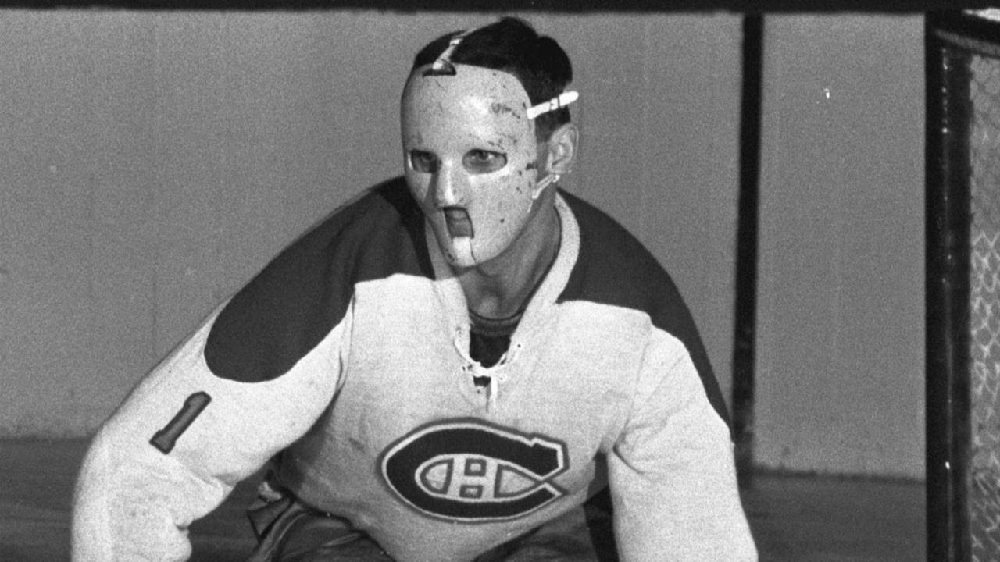

The photo on the right shows the first mask ever used in an NHL game. This mask was first used on November 1, 1959 by Canadiens goaltender Jacques Plante. This mask was one piece of solid fiberglass with holes in it for his eyes and mouth. The mask was held onto his face with straps. Although it was a good design, the mask wasn't very practical, as it only covers your face. This leaves the rest of your head exposed, which is the most vunerable to injury. It would also still hurt if a puck hit you in the face, as the mask was sculpted to fit perfectely on.
In the first period of a game between the Montreal Canadiens and New York Yangers, on November 1, 1959, Jacques Plante got struck in the face by a puck. He had to leave the game to get stitches. After that, he refused to return to the game without his mask, which he had only previously worn in practices. The coach gave in, and the Canadiens ended up winning, 3-1. After that, the Canadiens went on to win the next straight 18 games. For the Canadiens first playoff game that season, his coach asked him to remove the mask, and the Canadiens lost the game 3-0. After that, Plante wore his mask for the rest of his career. By 1969, this mask became the standard, and only a few goalies went without one. The last goalie to go without a mask was Andy Brown, in 1974.
In the 1970's, 2 masks were invented. The first one was the helmet-cage combination. This mask made the front of the mask a cage, to help with visibility. It also had a strap made of fiberglass that went over the head, and covered the back, which greatly decreased the amount of injuries to goaltenders. It still didn't have any padding inside, so it still really hurt if a puck hit you in the face or the back of the head. The second mask invented was the fiberglass-cage combonation, or the combo mask. This mask is still used today. The mask is very aerodynamic, and has lots of padding inside the mask, so it doesn't hurt as much if a puck hits you in the head. These helmets are considered safer as they disperse the impact of the puck more evenly throught the mask. There is still a cage at the front, which is called cats-eye, to improve visibility. Helmets nowadays also have a plastic extension at the bottom of the mask, to protect your neck.